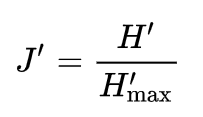
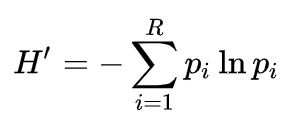
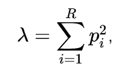
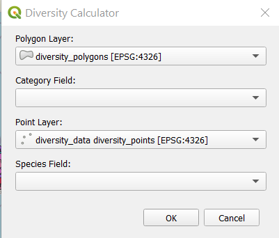
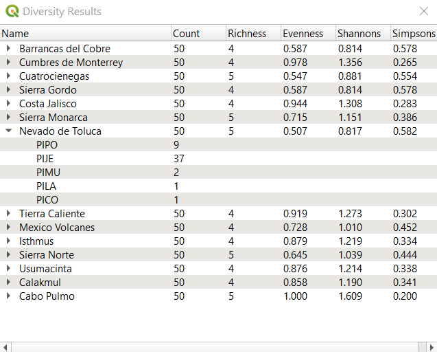

Welcome to DiversityCalculator!¶
Download documentation as ePub
The goal of this plugin is to facilitate estimation of biodiversity given a set of polygons containing the areas that you want to estimate diversity for and a set of points where each point represents a single species observation.
The polygon layer must have at least one string field that contains a category name. This could be a unique identifier, in which case diversity indices will be calculated for each polygon. Alternatively it could be a field used to classify the polygons into categories. For example you may have 30 polygons that are classified into three different elevational ranges, Low, Moderate, and High. In this case the observations will be pooled over all the polygons with the same category and one set of diversity indices will be calculated for each unique category.
The point layer must contain at least one string field holding the species name. It is important that the spelling is correct or they will be considered 2 different species. The number of observations for each species within a single category will be used to calculate the diversity indexes .
Diversity Indices¶
The choice of which diversity index to use is a loaded topic in ecology. The purpose of this plugin is to provide a method for calculating the different indices. It is up to the user to understand the advantages and disadvantages of the different indices and determine which is best for them.
Species Richness¶
Species Richness (R) is simply the number of unique species observed. While Richness is an important component of biodiversity it does not provide the full picture. Consider 2 areas, each of which has 1000 observations of 10 different species. Each has species richness of 10 but what if one of thse had 900 observations of a single species and 3 of the 10 species had a single observation. This area is pretty well dominated by a single species. Is it more or less diverse than the second area which also had 10 species but each of the 10 species had 100 observations making them very evenly distributed.
Species Evenness¶
Species Evenness (J’) is a measure of how evenly distributed the number of observations for each species are. It provides a critical second element of biodiversity that is not encapsulated in species richness. Most other diversity indices are attempts at providing a single number that reflects both species richness and species evenness, but there is a specific definition for evenness.
Where H’ is the Shannons diversity index. Evenness is therefore the proportion of the measured Shannons diversity, relative to the maximum possible value for Shannon’s diversity given the species richness (the natural logarithm of richness [ln R]).
Species evenness ranges from 0 to 1 and one only occurs when all species have the same number of observations.
Shannon’s Diversity Index¶
Shannons Diversity Index (H’) has its roots deep in information theory. It is an estimate of entropy or information content. Nevertheless it is relatively simple to calculate and ecologists have found it useful because it incorporates both richness and evenness. The maximum value for Shannons diversity index occurs when all species have the same number of observations (Evenness = 1.000). When that occurs, the value of H’ will be equal to the natural logarithm of species Richness. Increasing either richness or evenness will result in increased H’
Shannons diversity index (H’) is calculated according to the following formula:
where pi is the proportion of the total observations for each species.
Simpsons Diversity Index¶
Simpsons Diversity Index (D) is very similar to Shannons Diversity Index. It is calculated according to the following formula:
where pi is the proportion of the total observations for each species.
Although the calculation of Simpsons is similar to Shannons, the properties and interpretation are quite different. Simpsons diversity index is interpreted as the probability that two independent observations would be the same species. Therefore Simspsons Diversity Index actually decreases with more biodiversity. Because this is a bit counterintuitive several inverse transformations have been proposed.
The Inverse Simpsons index is equal to 1 / D . It has a maximum value that is equal to species richness when there is an evenness of 1.
The Gini-Simpson index is equal to 1 - D . It can be interpreted as the probabiility that any two independent observations will be different species.
Using the plugin¶
To use this plugin simply go to the QGIS plugin managerand install it on your system just like any other QGIS plugin. You will see a toolbutton in the plugins toolbar with the following image.
After clicking this toolbutton the following dialog will appear
Choose the layer that you want to use as the polygon layer and the field that defines the category.
Next choose the layer containing the species occurrence points and the field that contains the name of the species observed at that point.
Click OK and you will see a table similar to the one below.
Note that you can expand each entry to see the raw data that was used to calculate each estimate of diversity.